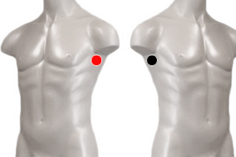

Rabia
Pares
axila - axila
esfinter uretral - esfinter uretral
mordida - axila*

NOTA: el Par mordida - axila es Reservorio de rabia. negativo sobre la mordida de perro, gato, ratón, etc.
Generalidades:
Virus ARN. Sintomatología laríngea, otitis crónica, sinusitis crónica, asma bronquial, problemas en SNC, fotofobia, alteración del carácter (irritabilidad, agresión), en niños presentan miedos nerviosismo, rinitis pigmentaria, maculopatías, alteraciones en tiroides, paratiroides y parótida, timo, mamas, encorvamiento de la columna, trastornos digestivos.
El par: esfinter uretral = cooresponde al virus de la rabia Tipo III que ha sido identificado por el biomagnetismo como consecuencia de prácticas zoofílicas.
Transmisión
En general el virus se transmite de mamíferos a humanos, principalmente a través de las mascotas como perros, gatos, roedores (muy común en los niños). Con menor frecuencia es por haber sido mordido o arañado accidentalmente por alguno de esos animales. En caso de que la mascota sea el transmisor del virus, es muy probable que la persona se vuelva a contagiar. Se recomienda tratar a la mascota (algunos biomagnetistas están dispuestos a dar tratamiento a las mascotas), desechar el cepillo dental y rastrillo.